Kretser
Kretser og kretsdiagram
(Lærebok 9.1)
Oppgave: Hestesko
En leder har form som en hestesko som illustrert i figuren. Den ene enden har potensial \( V_1 \) og den andre \( V_0 \).
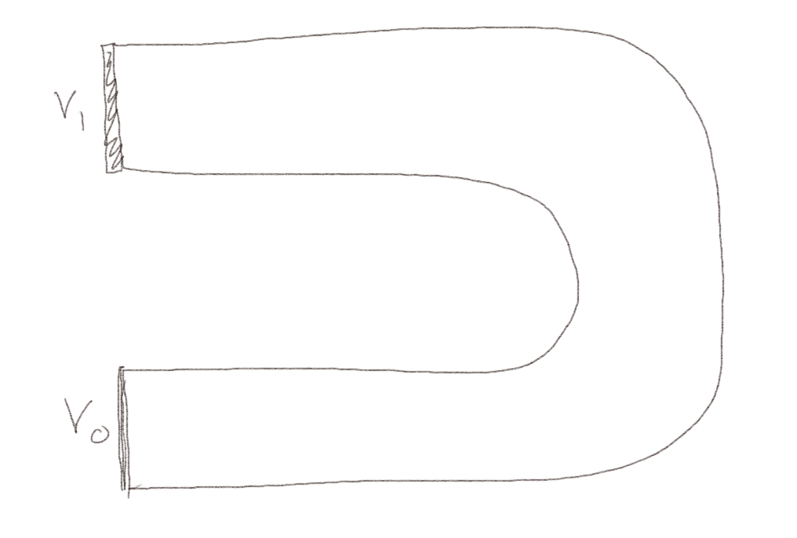
a) Skisser ladningsfordelingen i og på lederen.
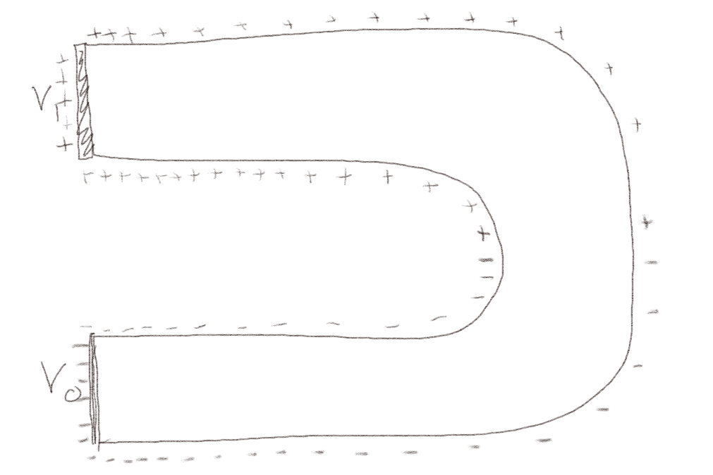
b) Skisser det elektriske feltet i lederen.

Oppgave: Langs en krets
Figuren under viser en enkel krets.
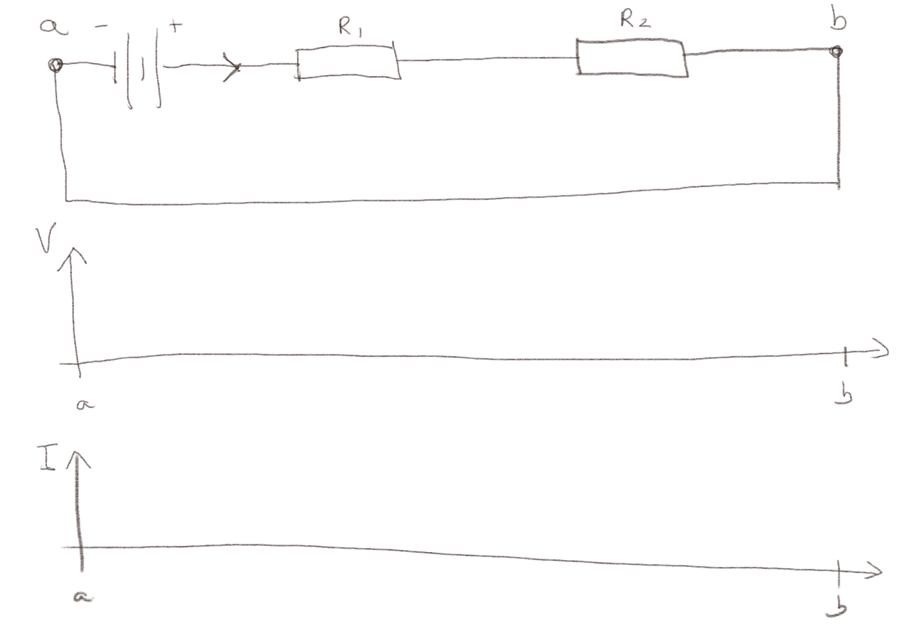
a) Skisser det elektriske potensialet \( V \) mellom punktene \( a \) og \( b \).
Potensialet øker med en viss verdi \( V_0 \) over batteriet og faller over de to motstandene.
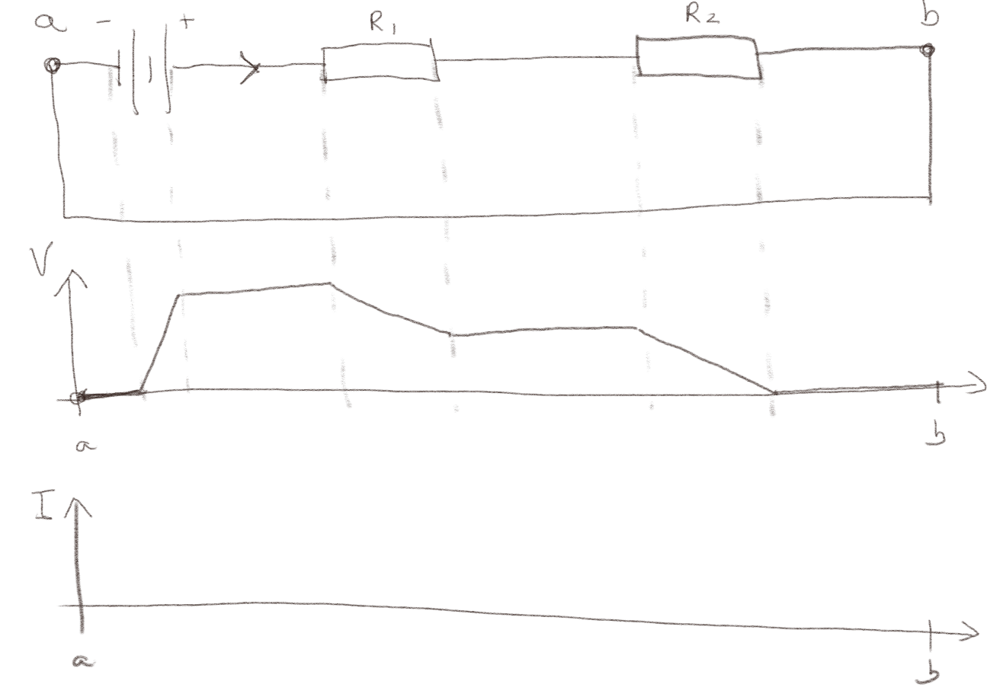
b) Skisser strømmen \( I \) mellom punktene \( a \) og \( b \).
Strømmen er den sammen langs hele kretsen.
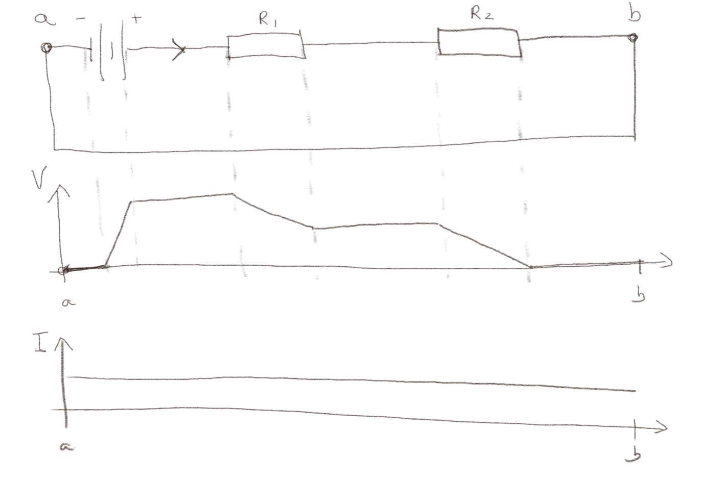
Kirchoffs spenningslov og strømmens retning
(Lærebok 9.1.4)
Oppgave: To motstander
Figuren under viser en krets med to motstander \( R \) og et batteri \( e \).
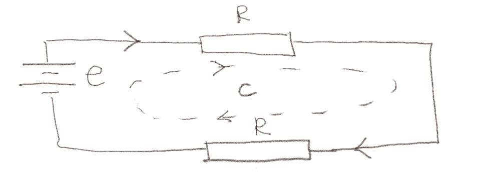
a) Hva blir Kirchoffs spenningslov for denne kretsen?
\( e - 2IR = 0 \)
Vi følger retningen gitt av pilene. Det er en spenningsøkning \( e \) over batteriet og et spenningsfall \( -IR \) over hver av motstandene, slik at rundt hele kretsen blir Kirchoffs spenningslove $$ \begin{equation} e - IR - IR = 0$ \tag{1} \end{equation} $$
b) Hva blir strømmen i kretsen?
\( I = e/(2R) \)
Vi finner \( I \) from Kirchoffs spenningslov $$ \begin{equation} e = 2 IR \quad \Rightarrow \quad I = \frac{e}{2R} \; . \tag{2} \end{equation} $$
Oppgave: En eller to ledninger
Figuren under viser et batteri som er koblet sammen med en eller to motstander.
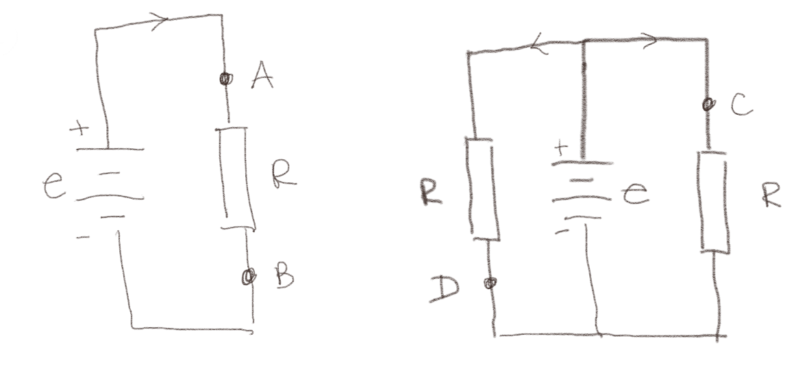
a) Ranger strømmene \( I_A \) til \( I_D \) fra største til minste verdi.
\( I_A = I_B = I_C = I_D \)
Spenningen over motstanden \( R \) i den venstre figuren er den samme som over hver av de to motstandene \( R \) i den høyre figuren (spenningen er den samme alle steder langs en linje i et kretsdiagram, fordi linjene representerer ideelle ledere). Derfor er strømmen den samme gjennom alle motstandene, både gjennom motstanden i figuren til venste og i begge motstandene i figuren til høyre. Derfor er \( I_A = I_B = I_C = I_D \).
b) Ranger spenningen \( V_A \) til \( V_D \) fra største til minste verdi.
\( V_A = V_C > V_B = V_D \)
Vi ser at både \( V_A \) og \( V_C \) er knyttet til toppen av batteriet med en ideell leder og derfor har samme potensial som denne. Vi ser at \( V_D \) og \( V_B \) er knyttet til bunnen av batteriet med en ideel leder og derfor har sammen potensial som denne. Der for er \( V_A = V_C > V_B = V_D \).
Oppgave: Retninger
Figuren under viser en krets med to batterier. Vi har gjettet på strømretningene som vist i figuren.
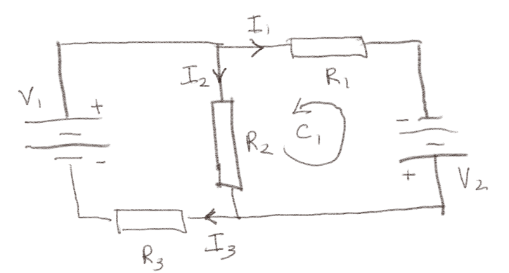
a) Hva er Kirchoffs strømlov for denne kretsen?
\( I_3 - I_1 - I_2 = 0 \)
Vi kan se på det nederste knutepunktet. Her kommer det to strømmer \( I_2 \) og \( I_1 \) inn og det går en strøm \( I_3 \) ut. Netto strøm ut av punktet blir derfor: $$ \begin{equation} I_3 - I_1 - I_2 = 0 \; , \tag{3} \end{equation} $$ som er Kirchoffs strømlov for denne kretsen.
b) Hva er Kirchoffs spenningslov for løkken \( C_1 \)?
\( -V_2 + I_1 R_1 - I_2 R_2 = 0 \)
Vi ser at spenningen faller med \( -V_2 \) over batteriet i den retningen som løkken er tegnet inn. Spenningen faller med \( -(-I_1 R_1) \) over motstanden \( R_1 \), dvs at den øker over denne motstanden. Spenningen over motstanden \( R_1 \) ville falt i retningen av \( I_1 \), mens den altså øker i motsatt retning av \( I_1 \). Spenningen faller over motstanden \( R_2 \) med \( -I_2 R_2 \). Kirchoffs spenningslov er derfor: $$ \begin{equation} -V_2 + I_1 R_1 - I_2 R_2 = 0 \; . \tag{4} \end{equation} $$
Eksempel: Kretsanalyse
(Lærebok 9.1.8)
Oppgave: Grill eller ikke
Figuren under viser to kretser: en med et voltmeter og en med et amperemeter.
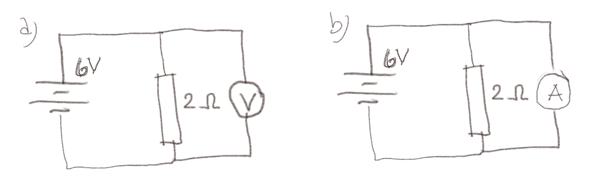
a) Hva viser voltmeteret?
- 6V
- 3V
- 2V
- 0V
- Det vil bli "grillet"
6V
Voltmeter viser forskjellen i spenning mellom de to punktene det er koblet til. Voltemeteret vil ha høy motstand slik at det ikke går noe særlig strøm gjennom det og det ikke påvirker strømmene i kretsen betydelig. Det øverste punktet er på samme potensial som toppen av batteriet, mens det nederste punktet er på samme potensial som bunnen av batteriet. Potensialforskjellen som voltmeteret viser er derfor det samme som potensialet over batteriet som er 6V.
b) Hva viser amperemeteret?
- 6A
- 3A
- 2A
- 0A
- Det vil bli "grillet"
Det vil bli "grillet"
Ampermeteret viser hvor mye strøm som går gjennom amperemeteret. Et amperemeter vil ha liten motstand for ikke å påvirke spenningsfallene langs kretsen betydelig. Det betyr at nesten all strømmen vil gå gjennom amperemeteret. Strømmen gjennom dette blir \( I_A = V/R_A \), hvor \( R_A \) for amperemeteret vil være liten slik at strømmen blir stor. Amperemeteret blir varmt pga det store effekttapet. Vi sier da noen ganger at det blir "grillet" (fried på engelsk).
Oppgave: Variabel motstand
Figuren under viser en krets med et batteri og to motstander. Motstanden \( R_1 \) er en variabel motstand.
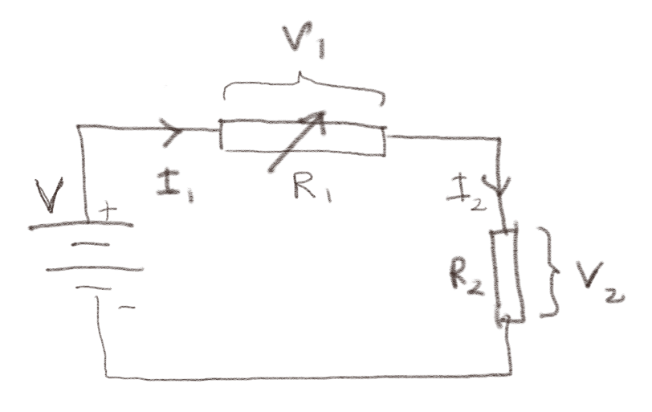
a) Når \( R_1 \) avtar, så vil \( V_2 \) over \( R_2 \):
- øke
- avta
- forbli den samme
øke
Vi kan her ressonere uten å regne ut verdiene. Hvis \( R_1 \) minker vil den totale motstanden minke, og strømmen vil øke (fordi motstanden blir mindre), dermed vil spenningsfallet over \( R_2 \) øke.
b) Når \( R_1 \) avtar, så vil \( V_1 \) over \( R_1 \):
- øke
- avta
- forbli den samme
avta
Hvis \( R_1 \) avtar vil spenningsfallet over \( R_2 \) øke. Men fordi det totale spenningsfallet over \( R_1 \) og \( R_2 \) forblir det samme (likt som spenningen \( V \) til batteriet), vil derfor spenningen over \( R_1 \) avta.
c) Finn spenningen \( V_2 \) over \( R_2 \) som funksjon av \( R_1 \), \( R_2 \) og \( V \). Sjekk at svaret stemmer med det du fant i deloppgave a).
\( v_2 = V R_2/(R_1 + R_2) \)
Strømmen gjennom hele kretsen må være den samme, \( I_1 = I_2 = I \). Kirchoffs spenningslov for kretsen blir \( V - V_1 - V_2 = V - I R_1 - I R_2 = V - I(R_1 + R_2) \) slik at \( I = V/(R_1 + R_2) \). Spenningsfallet \( V_2 \) over \( R_2 \) er da $$ \begin{equation} V_2 = I R_2 = \frac{V}{R_1 + R_2}R_2 = V \frac{R_2}{R_1 + R_2} \; . \tag{5} \end{equation} $$
Kretser med kondensatorer
(Lærebok 9.2)
Oppgave: Samme krets som før
Figuren under viser en krets 0 og tre kretser A, B, og C. Hvilke kretser er ekvivalente med kretsen 0?
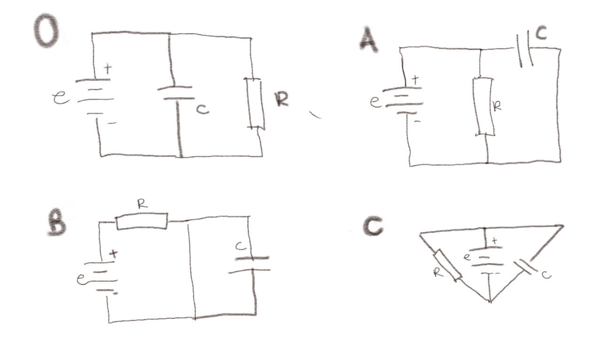
a) A?
Hva betyr det at to kretser er ekvivalente? De er ekvivalente hvis vi ved å strekke og tøye så mye på ledningene som vi vil kan få den ene til å bli lik den andre. Merk at du i denne prosessen også kan bevege ledningene ut av planet som de er tegnet i, hvis det gjør det enklere.
Ja
Vi kan se at krets A er den samme som krets 0 ved overgangen som er vist i figuren under.
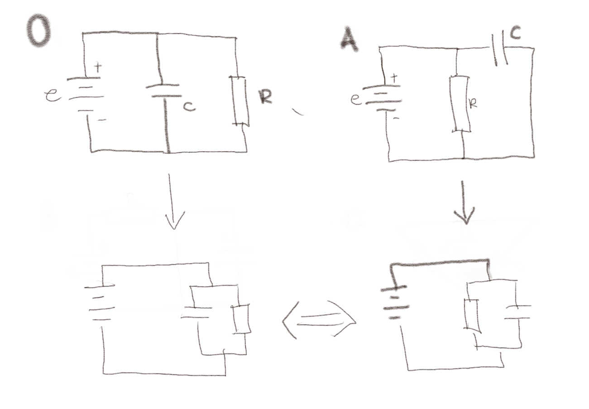
Her viser jeg hvordan jeg strekker og tøyer i ledningene, men jeg kobler dem ikke om, og viser at jeg kan gjøre om A til 0.
b) B?
Nei
Her klarer vi ikke å gjør om B til 0 fordi B har en ledning som forbinder de to sidene av kondensatoren \( C \) som gjør at det ikke vil være noen spenningsforskjell over \( C \). Slik er det ikke i 0. De kan derfor ikke være ekvivalente.
c) C?
Ja
Denne kan være litt mer tricky, men den blir enklere hvis du tillater å tegne om kretsen som vist under, og så løfte den venstre delen ut av planet og over på andre siden. Det er litt vanskelig å tegne, men kanskje mulig å se for seg?
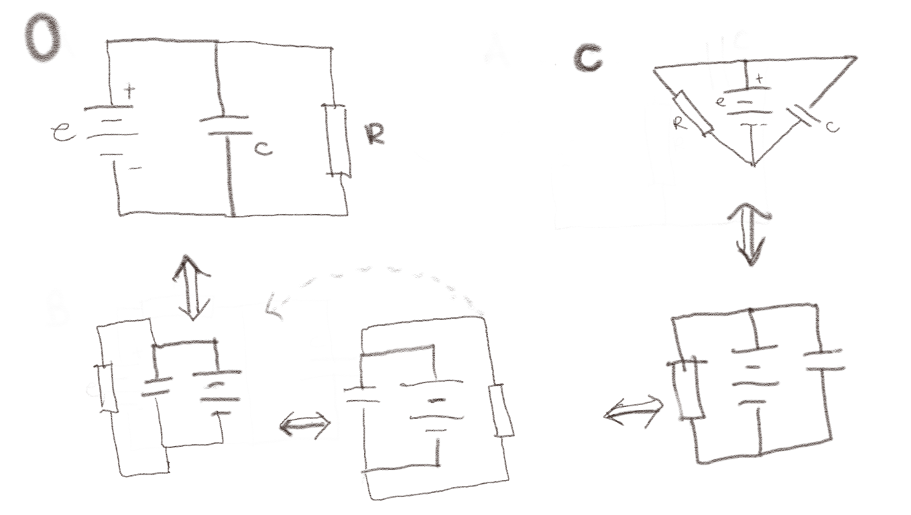
Kretskomponenter
(Lærebok 9.2.1)
Oppgave: Bilde av krets
Figuren under viser et bilde av en krets som er bygget med SnapCircuit.
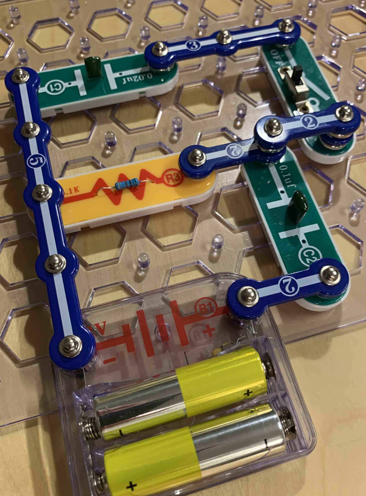
a) Tegn et kretsdiagram for denne kretsen.
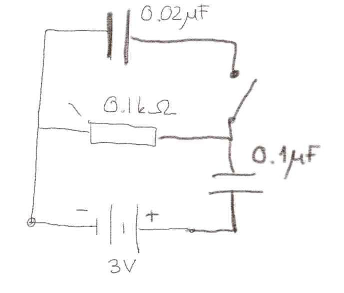